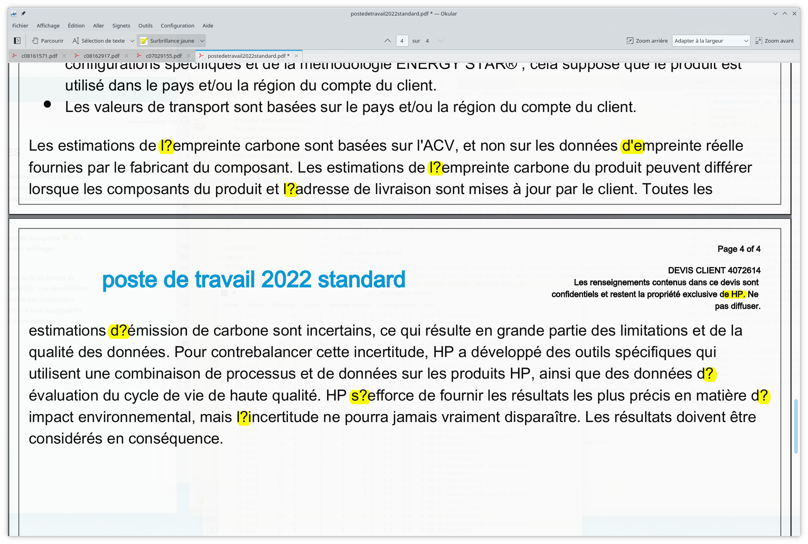

Représentation des données textuelles
Les données manipulées par un ordinateur sont représentées par une suite d’octets. Les textes ne font pas exception à cette rÚgle : ils sont stockés eux aussi sous forme numérique. Quelles transformations sont appliquables pour passer du texte à sa représentaton numérique, et inversement ?
Le paragrapahe ci-dessus illustre ce que donne un texte mal encodé. Avec un codage correct, on aurait lu :
Les données manipulées par un ordinateur sont représentées par une suite d’octets. Les textes ne font pas exception à cette règle : ils sont stockés eux aussi sous forme numérique. Quelles transformations sont appliquables pour passer du texte à sa représentaton numérique, et inversement ?
Autre manifestation du même problème, dans ce devis de HP (!) en 2022 :

Ces désagréments, issus d’un autre âge, sont encore courants aujourd’hui, dans les échanges numériques. Le but de ce chapitre et de comprendre d’où vient le problème, pourquoi il persiste au fil du temps, et comment oeuvrer pour le faire disparaitre.